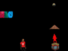

| Publiacidez, teleestreñimiento, inforetortijón, psicotrompazo, high resolutión agujeta...son sólo una muestra de los modernos concetos que las nuevas tecnologías van dejando a su paso. Neo-actitudes psicosomáticas que colapsan las sinápsis neuronales en los momentos precisos y que desencadenan- reacciones-encadenadas-a-producir cortocircuítos emocionales. La materia prima del caos, la atmósfera del campo de batalla tras la batalla, el desagüe de una carcajada son ahora, gracias a los avances de la neurocirugía plástika, espacios cotidianos donde tomarse un café o leer el Marca y están dejando de der considerados tabú para pasar a ser taboo en la sociedad en la que vivimos, rellenita contradicciones. La muestra que os presentamos a continuación es una selección de publicidad nunca emitida, bocetos a vuelapluma...y no darle más vueltas. DISFRUTAD de ELLO! |
 |